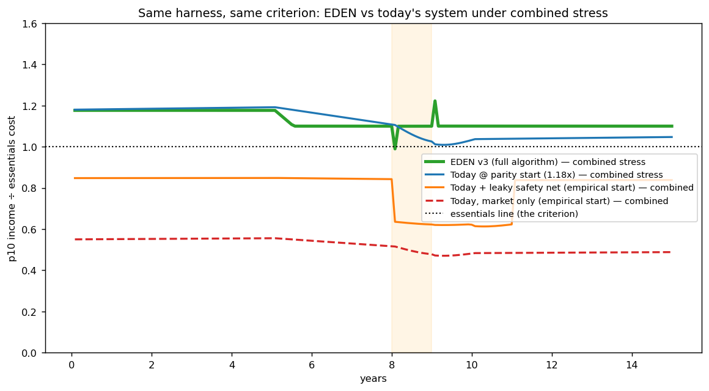
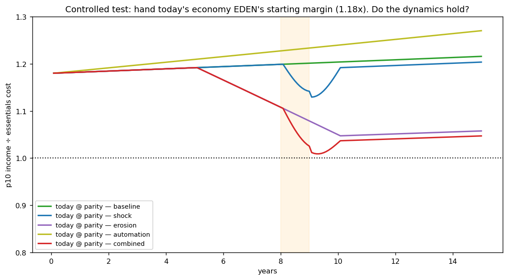
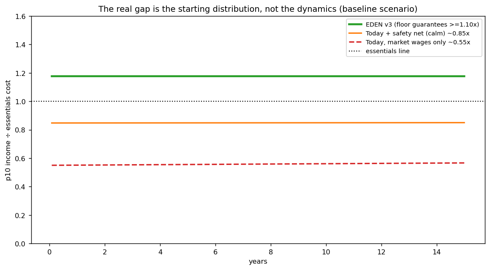

In plain language
Companion to RESULTS - Today vs EDEN (v3 comparison). Companion added July 11, 2026 — the v1–v5-era runs predate the plain-language convention; written from the committed RESULTS as it stands today (including any verification-pass corrections already applied in that file), with no reinterpretation.
The question
The EVE sims judge EDEN by one pre-registered criterion: if the 10th-percentile person's income falls below the cost of essentials for 3 or more consecutive months, the design fails. Fair's fair — how does today's economy do, judged by the exact same test in the exact same model? The v3 EDEN engine was ported verbatim and a status-quo arm added at the same level of abstraction, in three honest variants, because modeling "today" invites rigging.
The backstory
The three EVE sims are the same experiment on progressively more honest versions of EDEN, and the arc matters: v1's bare concept fails under pessimistic data demand (the bottom decile is underwater from ~month 16 — "a design that needs luck needs a patch"); v2's patches pass, but the floor had to be funded with printed money (0–3.9% of issuance); v3 runs the actual algorithm on a harder world and passes all ten scenario × demand combinations with the floor self-funded and ~0% inflation in that run (both v3-era headlines were later retired: index governance remains open; the floor is now a separately funded module). And the honest frame for all of it: these simulations establish that the mechanism is internally coherent and survives a defined stress suite under explicit assumptions — they do not establish that EDEN will work in the world.
What we found
EDEN v3 passes all five scenarios (with a known 1-month dip to 0.99 under combined stress, inside the criterion). The honest surprise: handed the same fair start (1.18× essentials), today's dynamics mostly hold too — today-at-parity passes all five under moderate stress. But today has no structural floor, so under a severe (12%) combined shock it breaches the essentials line for 16 months, where EDEN holds 1.10× regardless of shock depth. And the real world doesn't grant that start: market wages put the 10th percentile near 0.55× a living-wage basket (roughly $13–15/hr against an MIT living wage of ~$25/hr), and even the safety net — leaky, lagged, pro-cyclical — reaches only ~0.85×, dropping to ~0.61× under combined austerity stress. So today fails the criterion from month 1 — not because of its dynamics, but because of where the bottom decile starts and how partial the net is. The decisive difference is not the engine — it's the floor and the starting distribution; the genuinely earned v3 result is that EDEN's floor is cheap and self-funded (~0–2.2% of issuance, zero new minting).
The honest catch
Three checks keep this from being a rigged win. The criterion favors any system with a guaranteed floor — this is less a horse race than a statement of which system bothered to build one; the defensible claim is that EDEN's floor is structural, indexed, and cheap, while today's is statutory, lagged, and politically contingent. EDEN's raw engine is more unequal than today's, not less — v1 found the top 10% of creators capture ~84% of minting before correction, versus a top-10% wage share around 45% today; EDEN only becomes more equal because of the routing, effort-weighting, and floor, so "EDEN is automatically fairer" is false and shouldn't be claimed. And the essentials-basket definition drives the verdict — against a leaner bare-survival basket many more people clear 1.0; EDEN sidesteps that fight by indexing its floor to whatever the basket is. The status-quo arm is a stylized, illustrative calibration meant to be argued with — not a forecast.
One line
Judged by the same pre-registered test, EDEN passes because it built a structural, indexed, shock-proof floor that v3 shows costs almost nothing (~0–2.2% of issuance, zero printing) — though see the dated note at the end: later, harder tests changed the funding picture — while today's economy — which mostly holds when handed a fair 1.18× start until a severe shock sinks it for 16 months — fails from month 1 in reality because its bottom decile starts at ~0.55× essentials and its safety net reaches only ~0.85×; the honest pitch is not "our engine wins" but "we made the floor structural, indexed, and cheap."
(Dated note, July 18, 2026: this file describes its simulation-era result faithfully and is kept unedited above — but read "self-funded / costs almost nothing" as an in-model result from this early chassis, since retired as a general claim. The harder open-economy and rebuild tests (v6.x, v13.1) found no scenario where the floor fully pays for itself; every real activation needs a real funder, and the durable result is that a funded floor is cheaper than traditional welfare delivery. The current framing lives in the reframed public docs and the Decision Record.)
Words used here (added July 18, 2026 — plain-language house rule; the text above is unchanged). Pre-registered — the pass/fail bar was written down before running, so results can't be graded on a curve. 10th percentile / bottom decile — the person poorer than 90% of people / the poorest tenth as a group; the whole test watches them. Structural vs statutory — built into the machine's own plumbing versus created by ordinary law, which budgets and politics can lag, trim, or repeal. Indexed — automatically re-pegged to current prices, so inflation can't quietly shrink it. Pro-cyclical — moving with the economic cycle: today's safety net weakens exactly when times get bad — the opposite of what a floor should do. Austerity — government belt-tightening (benefit cuts and freezes), layered on here as stress. Issuance / minting — newly created money / the act of creating it; "zero new minting" means the floor was covered without printing. Routing — the automatic fixed split of every newly minted EVE (creator, upstream works, pool, protocol) — the plumbing that funds the floor. Effort-weighting — paying active engagement more than passive consumption. At parity — handed the same starting position (1.18× essentials), so only the dynamics compete. Chassis — the existing, tested engine a run is built on (a proven car frame); "this early chassis" in the note means the v3-era model these results came from. Stylized — deliberately simplified and illustrative, meant to be argued with — not a forecast.
Figures



Technical results
A companion brief to Simulations/EVE Sim v1–v3, written June 2026. It answers six questions: what these simulations are, what v3 specifically tested, whether this is a "standard" economic model, how today's economy performs in the same harness, what the v3 results actually mean, and what to do next. The new status-quo comparison run lives in this folder (today_vs_eden_sim.py, three figures, results_today_vs_eden.json).
1. What the three simulations are
All three are the same experiment run on progressively more honest versions of EDEN. The experiment is a 15-year, 100,000-person microsimulation (monthly steps) that asks one pre-registered question, agreed before each run so the goalposts can't move:
Failure criterion: if the 10th-percentile participant's monthly income falls below the cost of an essentials basket for 3 or more consecutive months in any plausible scenario, the design fails.
Each run sweeps a stress suite — baseline, a year-8 drought/demand shock, data-value commoditization, an automation tailwind, and a "combined" kitchen-sink — and uses ablation: components are removed one at a time to see exactly what breaks. Prices are formed by a quantity-theory rule (price moves with money stock ÷ real supply). Every parameter sits at the top of the script and is, in your own words, "meant to be argued with, not believed."
The arc across versions is the real story:
| Version | What it modeled | Verdict |
|---|---|---|
| v1 — bare concept | Owner-only minting, death burn as the only sink, data income for non-creators, generous assumptions (no fraud, uniform data income). | Fails under pessimistic ("finite") data demand — the bottom decile is underwater from ~month 16. Survives only if data demand happens to track prices, and fails commoditization regardless. Conclusion: survival depended on monetary parameters nobody controls. "A design that needs luck needs a patch." |
| v2 — generic patches | Added a mint-rate governor (the rate c_t becomes a slow protocol variable, so "1 hour = 1 EVE" becomes "1 hour = c_t EVE"), an earnability floor, and effort-weighting. |
Passes all five scenarios under pessimistic demand, ~0.1%/yr inflation, creators get richer in real terms. But the floor had to be funded with printed money (0–3.9% of issuance), and the governor abstraction was too generous. |
| v3 — the actual algorithm | The real proposed algorithm (EVE Algorithm v1.0), on a harder world. | Passes all ten scenario × demand combinations, with the floor self-funded by the routing (zero new minting), ~0% inflation (v3-era result; both headlines since retired). |
The honest takeaway from the arc: EDEN's bare concept does not survive its own stress test. It becomes robust only once specific, formulaic corrective mechanisms are added — and v3 is the first run to test those mechanisms as actually specified rather than as rough stand-ins.
2. What v3 specifically tested — "the specific algorithm for EVE generation"
v3 is the first simulation to implement the EVE Algorithm v1.0 spec (01 Canon/EVE Algorithm v1.0) instead of v1/v2 approximations. The generation rule it models is:
MINT = c_t × B × T × W_effort × W_repeat × W_age × W_daily
paid to an asset's ownership stack when a verified human engages it. The design choices that make v3 different — and that drive the results — are:
- Only human attention mints; machines pay. Institutions/AIs that use data transfer existing EVE to data owners (a price, indexed to the essentials basket), rather than minting new EVE. This was the single biggest open question in your notes ("decision #1"), and it does two things at once: it keeps total issuance bounded by human time (your sybil-resistance and supply-predictability anchor), and it makes ordinary people's data income real-denominated — it automatically tracks the price level. That second property is what structurally solves v1/v2's worst failure.
- Pay-the-stack routing 60/15/10/10/5 (creator / maintainers / dependency graph / verification / protocol). The 10% verification pool funds the earnability floor first; the 5% protocol slice burns its surplus as a small continuous sink.
- Daily taper (hours 0–8 mint at 1.0, 8–12 at 0.5, 12–16 at 0.25, >16 at 0) and effort weights (passive consumption mints at 0.4×) — anti-grind, anti-addiction, formulaic.
- The governor:
c_tadjusts ≤1%/month, one-way-biased, to keep net issuance tracking essentials supply growth — monetary stability with no committee. - The earnability floor: any verified human can earn up to 1.10× the essentials basket via Verified Contribution Tasks, funded from routing.
- Legacy choice: ~50% of dying wallets are bequeathed rather than burned, which halves the death-burn sink (a deliberately harder test of monetary stability).
And it ran all of this on a harder world than v2: per-person data income is now heterogeneous (lognormal — the bottom decile earns ~17% of the mean, roughly 6× poorer than v1/v2's generous uniform assumption).
3. Is this a "common economic model" people run to prove ideas?
Partly. It is a bespoke model, not something off a shelf — but it is built from recognized, legitimate traditions:
- Agent-based computational economics (ACE) — heterogeneous agents interacting over time, e.g. Epstein & Axtell's Sugarscape and the Santa Fe artificial stock market. This is the closest family.
- Heterogeneous-agent macro — Bewley–Aiyagari–Krusell–Smith and modern HANK (Heterogeneous-Agent New Keynesian) models, whose whole point is that the distribution matters, not a single "representative agent." Your focus on the 10th percentile is squarely in this spirit.
- The quantity theory of money (price ∝ money ÷ output) — textbook monetarism, used for the price equation.
- Stress testing / scenario analysis — exactly how central banks evaluate banks (CCAR/DFAST): define adverse scenarios, see what breaks.
- Pre-registration and ablation — borrowed from clinical trials and machine learning. Agreeing the failure criterion before running, and removing one component at a time, are genuine methodological strengths most advocacy models lack.
What it is not: it is not a general-equilibrium model. There is no labor market, no production function, no behavioral feedback (people don't change how much they engage when prices or effort-weights change), velocity is fixed, there are no savings buffers, no adoption dynamics, and it's a single 15-year horizon.
So how should you describe what these sims "prove"? In economics, agent-based simulations demonstrate the possibility and robustness of a mechanism — "under these stated assumptions, this dynamic can occur / survives these stresses." They do not prove real-world outcomes; that's the job of empirical work and pilots. Stated precisely: the sims establish that EDEN's mechanism is internally coherent and survives a defined stress suite under explicit assumptions. They do not establish that EDEN will work in the world — identity, fraud, oracle integrity, adoption, and regulation are outside the model by construction. That is the honest and defensible claim, and it's exactly how your RESULTS files already frame it.
4. How today's system does in the same model — and vs EDEN
I ported the v3 EDEN engine verbatim (its numbers reproduce results_v3.json) and added a status-quo arm at the same level of abstraction, judged by the same criterion. Because modeling "today" invites rigging, I ran three honest variants and a sensitivity. Calibration is stylized but sourced (EPI on wages; MIT Living Wage on the essentials gap — see Sources):
- Today @ parity — start the 10th percentile at EDEN's launch margin (1.18× essentials) and apply today's dynamics (≈flat bottom-decile real wages, essentials outpacing wages, shocks not buffered, no structural floor). This is the controlled test: it isolates dynamics from the starting distribution.
- Today, market-only — start the p10 where the US wage distribution actually puts it: a 10th-percentile wage of roughly $13–15/hr against an MIT single-adult living wage of ~$25/hr ⇒ ~0.55× essentials, pre-transfer.
- Today + safety net — market plus a leaky, lagged, pro-cyclical means-tested top-up that reaches ~0.85× in calm times and is cut under fiscal stress.
Verdicts (same criterion, p10 below essentials for 3+ months = fail)
| System / variant | Baseline | Shock | Erosion¹ | Automation | Combined | p10 start |
|---|---|---|---|---|---|---|
| EDEN v3 (full algorithm) | PASS | PASS | PASS | PASS | PASS² | 1.18 |
| Today @ parity (controlled) | PASS | PASS | PASS | PASS | PASS | 1.18 |
| Today @ parity, severe shock (12%) | — | PASS | — | — | FAIL (16 mo) | 1.18 |
| Today, market wages only | FAIL | FAIL | FAIL | FAIL | FAIL | 0.55 |
| Today + safety net | FAIL | FAIL | FAIL | FAIL | FAIL | 0.85 |
¹ "Erosion" = the bottom decile's income source losing value (low-skill labor demand collapsing to automation/offshoring) — the direct analog of EDEN's data-commoditization. ² EDEN combined shows the known 1-month dip to 0.99 from the floor's indexation lag; within the criterion.
What this actually shows
The decisive difference is not the engine — it's the floor and the starting distribution. Three findings, in order of importance:
-
EDEN passes by construction. Its earnability floor guarantees the p10 ≥ 1.10× essentials; the p10 never drops below 1.10 except the documented 1-month indexation dip. That's not an emergent triumph of a clever engine — it's what a guaranteed, indexed floor does. The non-trivial, genuinely earned result from v3 is that this floor is cheap and self-funded (~0–2.2% of issuance, zero new minting) — not that EDEN's engine out-races the status quo.
-
Handed a fair start, today's dynamics mostly hold. This is the honest surprise: at a 1.18× start, today's economy passes all five scenarios under moderate stress. It is not true that today's mechanics inevitably sink the bottom decile. But today has no structural floor, so under a severe combined shock the p10 breaches the essentials line for 16 months — whereas EDEN holds 1.10× regardless of shock depth. That is the clean structural contrast: today depends on the shock staying mild; EDEN doesn't.
-
The real-world gap is the starting position. Today's p10 doesn't start at 1.18×. Market wages put it near 0.55× a single-adult living-wage basket; even a leaky safety net only reaches ~0.85×, dropping to ~0.61× under combined austerity stress. So today "fails" this criterion from month 1 — not because of dynamics, but because the bottom decile begins below the essentials line and the safety net is partial, lagged, and pro-cyclical. (See
figC_starting_position.png— three flat lines: EDEN at 1.18, the net at 0.85, the market at 0.55.)
Two honesty checks that keep this from being a rigged win
- The criterion favors any system with a guaranteed floor. "Does everyone always clear essentials?" is a question EDEN answers by design and today does not. So this is less a horse race than a statement of which system bothered to build a floor. The fair, defensible claim is narrow: EDEN makes the floor structural, indexed, and (per v3) cheap; today's is statutory, lagged, and politically contingent.
- EDEN's raw engine is more unequal than today's, not less. Your own v1 found the top 10% of creators capture ~84% of minting before correction (vs a top-10% wage share around 45% today). EDEN only becomes more equal because of the routing, effort-weighting, and floor — the very mechanisms these sims exist to test. "EDEN is automatically fairer" is false and shouldn't be claimed; "EDEN's corrective mechanisms measurably out-perform today's, at low cost" is true and is what to claim.
- The "essentials basket" definition drives the verdict. Against the fuller MIT living-wage basket (which includes broadband, civic, modest margin), today's net reaches ~0.85×; against a leaner bare-survival basket, many more clear 1.0. EDEN sidesteps this fight by indexing its floor to whatever the basket is — a real design advantage, but worth stating plainly rather than hiding inside a number.
5. What the v3 results mean, exactly
Restating the five findings from RESULTS - EVE Sim v3.md in plain terms:
- Machine-pay structurally solved v2's biggest failure. Because institutions need data in real terms, paying for it makes data income track the price level automatically. The price-indexation that v2 had to assume is now a property of the mechanism. Evidence: even the bare design now holds the p10 above water at baseline — something it never did in v1/v2.
- Bare still isn't viable — but now the victim is creators, not the poor. Without the governor, inflation runs 9.6%/yr and the median creator's real income falls to 0.54× over 15 years; with the governor, it's 1.27× at ~0% inflation. The governor's real constituency turns out to be creators.
- The floor was never minted. Across every scenario, the 10% verification pool fully covered the floor — top-up minting was 0.0%, total floor cost peaked at 2.2% of issuance. In v2 the floor needed printed money; in v1.0 the routing finances its own safety net.
- Clean division of labor. Machine-pay handles indexation; the governor handles price stability (protecting creators); the floor handles the distribution tail. Remove any one and a specific, identifiable failure returns (e.g., no floor ⇒ commoditization sinks the p10 at month 74).
- The harder, heterogeneous world didn't break it. With the bottom decile at ~17% of mean data income, the full algorithm still passed, the floor quietly catching the tail at ~0.3–0.5% of issuance in normal times.
The one soft spot: under commoditization, the median creator's real income still erodes ~9–11% (the shrinking validator-pool remainder). Mild, but real.
What v3 does not prove — and this is the most important paragraph for you. The result rests on assumptions no simulation can settle: the level of institutional data demand (calibrated at ~10% of mint value — an admitted guess), an honest EBI oracle, perfect identity enforcement, and no fraud. These are pilot questions, not simulation questions. v3 means the algorithm as written is internally coherent and survives its own stress suite on harder assumptions, with its safety net paid for by its own routing rather than by printing money. It does not mean EDEN will work in the world.
6. Suggested next steps
A. Make the decisions the spec is waiting on (highest leverage). v3 quietly assumed the resolutions to your two biggest open questions: it adopted machine-pay (not machine-mint) and it turned on the governor + floor + effort-weight. Your Consolidated Spec still lists both as unresolved/"pending your adoption decision." Ratify them in 01 Canon (or write down why not). Nothing downstream — the white paper's monetary section especially — can be finalized until you do.
B. Close the known simulation gaps before any robustness claim goes public. In rough priority: 1. Fix the floor's indexation to a 7-day rolling EBI and confirm the 1-month combined-stress dip disappears. Cheap, removes the only criterion-adjacent wobble. 2. Sweep the one assumption that drives everything — the level of data demand. It's set at ~10% of mint and admitted to be unknowable pre-launch. Find the breaking point: at what demand level does the floor start needing real minting? This is the single most important untested sensitivity in the whole project. 3. Add what all three sims omit and which make the poor worse: fraud/sybil leakage, adoption-phase dynamics (the thin-network launch decade, when data demand is small), and behavioral feedback (engagement responding to effort-weights and prices). These are exactly where a sharp critic (your "Simmy") will push first. 4. Red-team the EBI oracle — model manipulation of the basket index, since the spec itself flags it as the softest attack surface.
C. Rewrite the pitch around what the sims actually support. Lead with "we built a structural, indexed, shock-proof floor and showed in simulation that it's cheap and self-funded" — not "our engine beats the status quo." Pre-empt the concentration critique by showing the routing/effort-weight evidence up front. The today-vs-EDEN comparison in this folder gives you the honest framing to do that.
D. Write the white paper's Monetary Mechanics section from the tested spec (your own stated next step), with the four real-world risks listed openly as the remaining work.
E. Design the pilot. The simulation has done its job. The next evidence is empirical — and your v1.0 proposal already names the falsifiable milestones: a 10k-person pilot, an EBI oracle red-team with prize money, fraud below 2% of minting, floor cost under 5% through one genuine demand shock, and at least one cohort of ordinary (non-creator) participants earning ≥ essentials for 12 consecutive months, on-chain and auditable. Hit those and EDEN stops being a stress-tested design and becomes an operating economy.
Files in this folder
today_vs_eden_sim.py— the comparison model (EDEN v3 engine ported verbatim + status-quo arm)figA_today_vs_eden_combined.png— the headline: EDEN vs three "today" variants under combined stressfigB_today_parity_scenarios.png— the controlled test: today handed EDEN's 1.18× start, all scenariosfigC_starting_position.png— the real gap: starting position, not dynamicsresults_today_vs_eden.json— all verdicts and parameters
Limitations of the comparison (carried forward and added)
Same structural limits as v1–v3 (quantity-theory pricing, no savings, no behavioral feedback, single horizon). Added for the status-quo arm: "today" is modeled as a stylized real-income trajectory for the p10, not a full macro model — no employment dynamics, no mobility across the distribution, no regional variation, and the lognormal wage spread understates the real top tail. The status-quo numbers are illustrative calibrations meant to be argued with, in the same spirit as the EDEN parameters — not forecasts.
Raw data